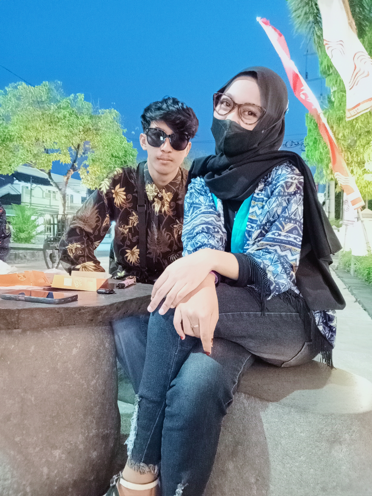

Maaf dek mas salah banyak ke adek, alasan mas sekarang jarang chat bukan berarti adek jahat, ataupun adek nggak baik. justru adek baik banget. kalau ditanya masih sayang? mas jawab masih. bahkan sangat sayang, mas selalu nyoba yakinkan diriku sendiri bahwa ada hari dimana kita bisa balik lagi.
Sekarang mas benar-benar sadar maksud dari "PEOPLE COME AND GO". Maspun sadar akar permasalahan kita adalah mas, Mas yang terlalu mencintaimu, mengajarimu sampai lupa cara memahami dirimu.
Terimakasih telah mewarnai hidupku. Mas gak pernah nyesal bisa sesayang ini ke adek, walau akhirnya kita emang belum bisa bareng lagi. Terimakasih dan maaf atas semua rasa dan perasaan ini.
Terimakasih telah menjadi bagian proses pendewasaan dan maaf telah mencintaimu segila itu, perpisahan ini gak buat mas mati rasa tapi hanya membuatku sulit untuk percaya bahwa mas sedang di cintai.
Terimakasih sudah memahami, terimakasih untuk waktu, cerita, bahagia, cerita yang selalu ingin kamu bagikan denganku. Selalu mendengar keluh kesahku dan menjadi orang yang adek percayakan untuk menceritakan yang semua orang gak perlu tau.
Maaf karna udah menjadi manusia egois, berharap bareng bareng terus. Gapapa saat ini mas masih kejebak sama moment kita pas masih sama sama.
Pesanku satu, hidup dengan baik. Mas hanya kurang beruntung memilikimu dan kurang mengerti keinginanmu. Jika suatu saat nanti kita bertemu kembali, percayalah mas sudah melewati masalah di kepalaku untuk bisa kembali bersamamu.
Mas hanya kurang beruntung dalam memperlakukanmu menjadi pasanganku, tapi nggak papa. Tidak denganmu, maka tidak juga dengan siapa pun.
Dan mas berpesan untuk adek, tolong adek jangan sampai melakukan hal yang aneh-aneh seperti yang pernah adek bilang. karena mas sangat percaya sama adek, adek tidak akan melakukan seperti itu. cukup mas dan adek yang tahu seperti aib kita dulu. mas ingin adek sama-sama berubah menjadi lebih baik, memperbaiki sholat, agama, cara berpakaian. karena mas ingin kita sama-sama berjuang dan belajar ke jalan yang lurus.
Mas akan selalu ada buat adek, selalu di sampingnya adek untuk melindungi adek. walaupun mungkin sekarang kita tidak berjalan berdampingan seperti dulu, tapi doa mas akan selalu ikut di setiap langkah adek. mas ingin adek tumbuh jadi perempuan yang kuat, yang lebih dekat dengan Allah, yang menjaga diri, menjaga hati, dan menjaga masa depan adek sendiri.
Kalau suatu hari nanti kita benar-benar dipertemukan lagi dalam versi terbaik diri kita, semoga itu bukan karena rasa kehilangan, tapi karena kesiapan dan kedewasaan.
Selamat menjalankan perjalanan panjangmu, hati hati. see you.
Ya Allah, Tuhan Yang Maha Membolak-balikkan hati manusia.
Jagalah hubungan hamba dengan Viona Nadinda Putri agar tetap terjalin dengan baik dan penuh kedamaian. Jika memang rasa yang masih tertinggal di antara kami adalah kebaikan, maka tuntunlah kami menuju jalan yang Engkau ridhai.
Berikanlah kesehatan yang sempurna, panjang umur, dan perlindungan-Mu untuk Ibunda dek Viona, adik dek Viona, serta untuk dek Viona Nadinda Putri. Jauhkanlah mereka dari segala penyakit dan mara bahaya.
Dan untuk ibu hambamu ini tolong Ya Allah, lembutkanlah hati Ibunda hamba. Bukakanlah pintu restu dan pintu maaf di hatinya terhadap Dek Viona Nadinda Putri. Hilangkanlah segala ganjalan atau kesalahpahaman yang pernah terjadi di masa lalu.
Jika ia adalah jodoh yang terbaik untuk dunia dan akhirat hamba, maka mudahkanlah jalannya dan satukanlah kami kembali dalam ikatan yang halal.